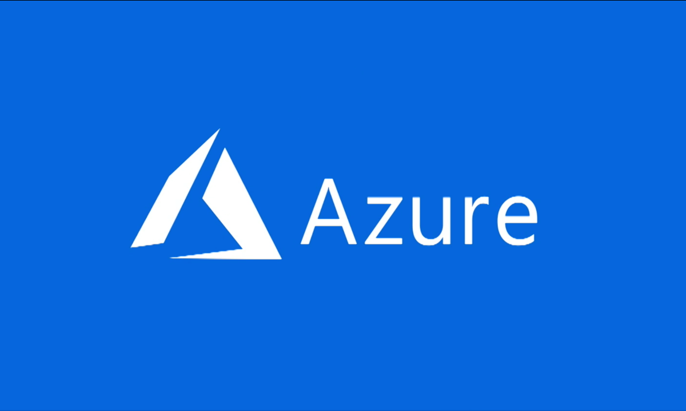

Deploy VM con windows 10 en Azure

About This Project
En este proyecto enseño como crear y desplegar una maquina virtual con windows 10 en AZURE, Azure es uno de los mas grandes proveedores de cloud computing.
Luego de Levantar la VM, verificar la conexion a internet, procedi a instalar una version de Python asi como la libreria de Flask. Flask permite crear aplicaciones web de forma muy rapida. Finalmente muestro como crear una regla basica para firewall azure, de esta manera la aplicacion web de Flask podia ser accedida desde la Ip publica de la VM
Steps
- 1. Crear cuenta en Azure
- 2. Click en Virtual machine
- 3. Asignar nombre a VM
- 4. Seleccionar la región
- 5. Seleccionar la Imagen
- 6. Asignar Usuario y password
- 7. Seleccionar puertos de entrada
- 8. Click en create
- 9. Esperar a que el recurso sea desplegado
- 10. Click en “Go to resource”
- 11. Copiar la IP Pública
- 12. Abrir Remote Desktop
- 13. Ingresar la IP de la VM (los asignados en el paso 5)
- 14. Ingrese UserName y password (los asignados en el paso 5)
- 15. Haga clic en yes (Ventana de Certificado)
- 16. Espere a que inicie la máquina Virtual
- 17. Verifique la conexión a internet (Edge browser)
- En mi caso yo ingrese a la página de mi perfil
- 18. Verifique la IP de la Máquina
- abrir CMD
- ipconfig
- 19. Instalar python 3.7
- 20. Instalar Flask
- pip install Fask
- 21. Crear folder y archivo.py de prueba
- Abrí el archivo con el IDLE de python
- copie en el archivo de Pruebas, el código de ejemplo
- 22. Desde CMD ejecuta el código de ejemplo
- navegue hasta el directorio principal
- Ejecute el comando python App.py
- se inicia el servidor de Flask
- 23.Ingrese la IP la maquina mas el puerto definido en el navegador
- http://10.0.0.5:5080
- 24. Verificar acceso web app desde la IP Pública
- No se puede acceder al sitio web
- 25. Crear Regla firewall en Azure (está en una regla general pero se puede restringir el acceso por IP)
- dentro de la MV ir a Networking
- click en Add inbound port rule
- asignar el puerto
- ingresar name y descripción de la regla
- esperar a que se cree la regla
- 26. Verificar acceso web app desde la IP Pública
- la aplicación de Flask se muestra correctamente